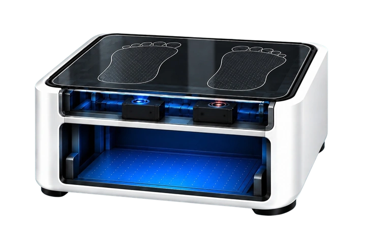

خطاكSTEPS · FootGuard
محطة فحص وقائي ذكية تكتشف خطر إصابة قدم الحاج قبل أن تحدث
نفحص · نكتشف · نحمي · نوجّه — الملخص التنفيذي
60+ kmقد يمشيها الحاج خلال المناسك
50–70°Cحرارة الأسطح في مواسم الحج
61.5%من إصابات القدم بثور، تليها التقرحات 20.9%
≈ 1.71Mحاج في موسم 2026
01المشكلة
معظم شعائر الحج تعتمد على المشي لمسافات طويلة، مع حرارة واحتكاك وضغط متكرر على القدم. الرعاية الحالية تتعامل مع الإصابة بعد ظهور الأعراض، دون فحص وقائي منظم، فيأتي التدخل متأخرًا ويزيد الضغط على الكوادر الصحية. الحجاج المصابون بالسكري وكبار السن وذوو الإصابات السابقة هم الأكثر عرضة.
02الحل
محطة فحص تجمع التصوير البصري والتصوير الحراري وقياس ضغط باطن القدم مع الأسئلة الصحية والفحص السريري، وتدمج النتائج في نظام دعم قرار يكتشف الحالات المعرّضة للخطر مبكرًا ويوجّه التدخل المناسب، خلال 60–120 ثانية لكل حاج (هدف تصميمي).
03كيف يعمل
01التصوير والفحص الحراريكاميرتان أسفل الزجاج ترصدان الاحمرار والبثور والتقرحات والنقاط الحرارية غير الطبيعية.
02قياس توزيع الضغطمنصة مستشعرات تحدد مناطق الضغط المرتفع والإجهاد في باطن القدم.
03التحليل والتوجيهدمج البيانات مع عوامل الخطورة، ثم تقرير بخريطة المخاطر وفئة الإجراء والتوصيات.
المخرجات — فئة إجراء لكل حاج:
خطورة منخفضةخطورة متوسطةخطورة مرتفعةأولوية عاجلةتقييم غير مكتمل
فئات مقترحة تتطلب مراجعة المختص؛ وعند نقص الفحص أو ضعف موثوقية البيانات لا تُسجَّل «خطورة منخفضة». الجهاز يدعم القرار ولا يشخّص.
04الأساس العلمي
- التصوير الحراري: فرق أكثر من 2.2°C بين القدمين مؤشر مبكر على خطر التقرح.
- ضغط باطن القدم: يحدد المناطق الأكثر عرضة للإجهاد والإصابة.
- الرؤية الحاسوبية: تساعد في اكتشاف الجروح والاحمرار والتقرحات وتحديد مواقعها.
05لماذا خطاك
لا يجمع أي من البدائل الحالية (TF Scan، Podimetrics SmartMat، Novel، Tekscan) التصوير الحراري والبصري وقياس الضغط مع الإرشاد والفحص السريري في محطة واحدة مصممة لبيئة الحج.
قدرات خطاك وفق التصميم المقترح؛ الذكاء الاصطناعي ضمن التطوير المستقبلي.
خطاكالملخص التنفيذي
06أين وصل النموذج الأولي
أُنجز وعُرضنموذج برمجي لمحطة الفحص يعمل ببيانات تجريبية من البطاقة حتى النتيجة · منطق قواعد يحدد فئة الإجراء · مكونات العتاد مختارة ومسعّرة (299 ريال) مع مخطط التوصيل · نموذج ثلاثي الأبعاد تفاعلي.
تقديري / هدف تصميميمدة الفحص 60–120 ثانية · أقصى وزن 150 كجم · 100–200 فحص يوميًا للجهاز · تكلفة تصنيع ≈ 300 ريال.
لم يُختبر بعددقة المستشعرات وتكرار القياس على أقدام حقيقية · دقة التصنيف مقارنة بالفحص السريري · الأداء في حرارة وازدحام المشاعر.
07السوق
| النطاق | القيمة |
|---|
| TAM | ≈ 16.94M حاج ومعتمر | 7.5M SAR |
| SAM | ≈ 1.71M حاج، أولوية للأكثر عرضة | 2.25M SAR |
| SOM | 10,000–50,000 فحص في الموسم | 225k SAR |
أماكن النشر: المسجد الحرام، نقاط التجمع ومحطات الحافلات، المراكز الصحية في المشاعر، منى وعرفة.
08نموذج العمل
نبيع الجهاز للجهات المشغّلة للرعاية: الجهات الحكومية والصحية، والمستشفيات، ومشغلي خدمات الحج والعمرة. ونقدّم التركيب والتدريب والدعم.
1,500 SARسعر مقترح للوحدة
500 SARاشتراك شهري بديل
≈ 300 SARتكلفة تصنيع تقديرية
09الخطوات القادمة
- تصنيع النموذج واختبار المستشعرات: دقة الضغط والحرارة وتكرار القياس، والانتقال إلى مصفوفة Velostat.
- التحقق السريري: مقارنة النتائج بالفحص السريري ومراجعة فئات الإجراء مع المختصين.
- نموذج ذكاء اصطناعي متحقق منه، ثم إنترنت الأشياء لمراقبة الأجهزة، والتشغيل بالطاقة الشمسية دعمًا لرؤية 2030.
11الفريق
أصيل الصبحي — طب، جامعة أم القرىأشواق الحسناني — صحة عامة، جامعة أم القرىمحمد الحربي — تقنية معلومات وذكاء اصطناعيرتاج الغامدي — صحة عامة، جامعة أم القرىد. رناد جاد كريم — استشارية الصحة العامة وطب المناطق المدارية
Almqaiti et al., 2024 (Foot injuries during Hajj 2023) · Lavery et al., 2007 (Foot temperature monitoring) · Castro-Martins et al., 2024 (Plantar pressure review) · Alhasson & Alharbi, 2025 (Computer vision for diabetic feet) · GASTAT Hajj Statistics 2026 · GASTAT Umrah Statistics Q1 2026